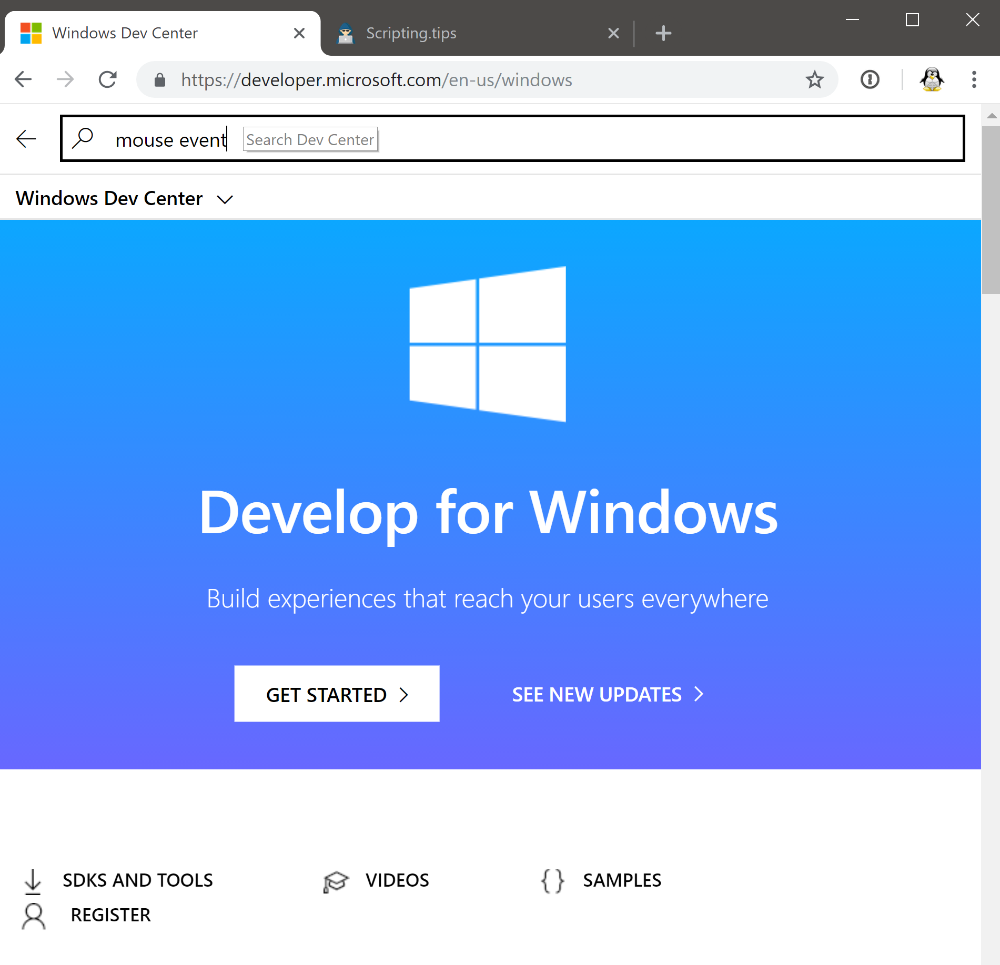
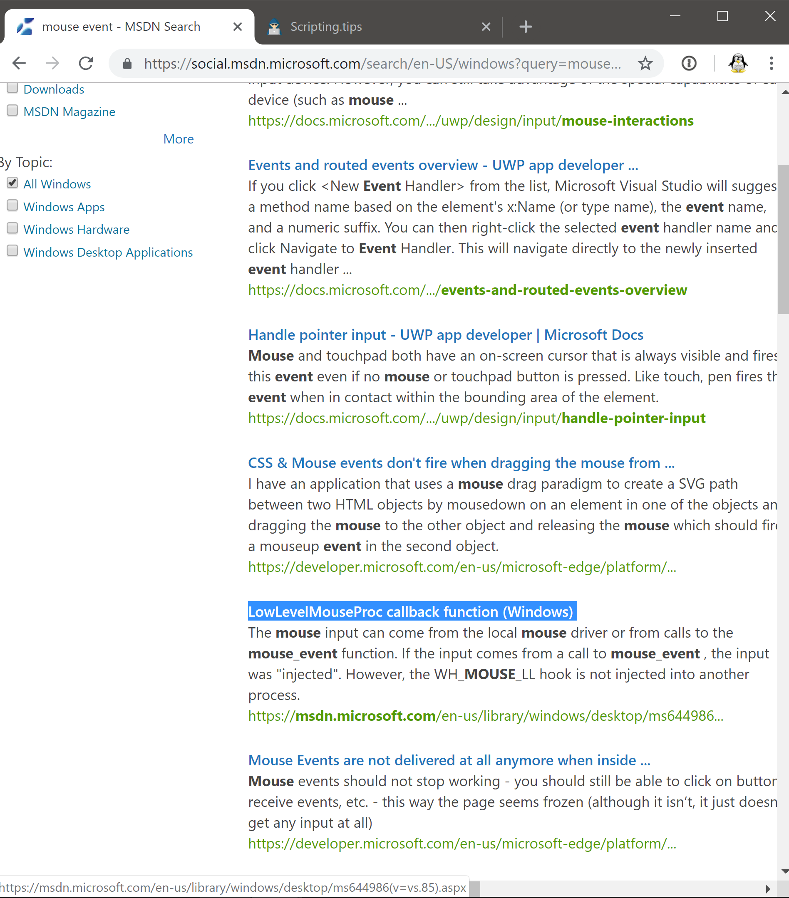

In this article, I will guide you through code, API and documentation to build a mouse tracking program on Windows using the native Windows.h API. This will be a long article and my goal is to try and show you how I worked to build this project, rather than presenting the final solution in a concise manner. Why build a mouse tracker? As a scripter, you might be interested in building a mouse tracker to record your activity and replay it later as part of a GUI automation script. Several good automation libraries exist and I encourage you to check them out before attempting to program one yourself. My motivation is different. I'm always trying to reduce my use of the mouse. Instead, I favor keyboard shortcuts to control my PC. Once mastered, keyboard shortcuts make me more productive. I can type a few keystrokes faster than the time it takes to move my hand to the trackpad or the mouse. To speed up the process, I must focus on learning the keyboard shortcuts that will reduce most my usage of the mouse. My plan is to track the mouse pointer continuously and then perform analytics on the logs to identify patterns. Then, find keyboard shortcuts to automate the actions corresponding to these patters. Because my tracker will run 24/7 on my PC, I want it clean, fast and reliable. Also, I'm interested in learning the Windows API so I set out to write it myself. Requirement for a mouse tracker I suspect that moving the mouse will generate a huge amount of event within the operating system. The goal is to record these events without significantly slowing down the computer. The script needs to be ultra fast so that the mouse's cursor does not lag, and to use memory efficiently so don't we don't fill up our whole hard drive with mouse events logs. Let's write some code Getting started with Microsoft Documentation To build this program, I will need to dialog directly with the Windows operating system. Since I'm new to this platform, I have no idea how to do so. Let's make a quick google search for the Windows API... Google redirects me to the official Microsoft Windows Dev Center. My goal is to hook into the event pipeline to record mouse events, so I will use their search function with keywords such as "mouse", "event", "record" and "hook".  Among the search results, I find a title that seems promising: LowLevelMouseProc callback function. There's everything that I need in there: a low level routine, a callback and something to do with the mouse.  Here is the link to the documentation for this procedure. If you are learning to become a programmer, go read that page and try to understand it. It reads: An application-defined or library-defined callback function used with the SetWindowsHookEx function. The system calls this function every time a new mouse input event is about to be posted into a thread input queue. Writing the event callback Okay, great. So I need to implement this function LowLevelMouseProc. And hook it into Windows using SetWindowsHookEx. Let's install Microsoft Visual Studio, the C++ IDE for Windows and write a body for this function: LRESULT CALLBACK LowLevelMouseProc( _In_ int nCode, _In_ WPARAM wParam, _In_ LPARAM lParam ) Reading the documentation further, I learn the values of the parameters: when nCode < 0 I must forward, otherwise I can log, wParam tells me whether I have intercepted a move event or not and lParam contains data about the event. So I'll retrieve the cursor position (x,y) from lParam. The type LPARAM is used as an alias for MSLLHOOKSTRUCT* so I will need a cast in there. I must delegate the event to CallNextHookEx. The documentation for this function states that the argument HHOOK is ignored so I'll simply use 0. Let's write a simple version of the function that prints the cursor position to the terminal. Using std::cout in a low level callback such as this one is a bad idea, but I'll take care of it later. LRESULT CALLBACK lowLevelMouseProc( _In_ int nCode, _In_ WPARAM wParam, _In_ LPARAM lParam ) { MSLLHOOKSTRUCT* lp = (MSLLHOOKSTRUCT*)lParam; if (wParam == WM_MOUSEMOVE) { std::cout << lp->pt.x << lp->pt.y << std::endl; } return CallNextHookEx(0, nCode, wParam, lParam); } Hooking into Windows So, how do I actually give my callback to Windows? And which header should I include to get the code to compile? To second half of the doc page reads: An application installs the hook procedure by specifying the WH_MOUSE_LL hook type and a pointer to the hook procedure in a call to the SetWindowsHookEx function. So I'll need to use SetWindowsHookEx to register my callback. Let's read the documentation for this function. The doc tells us how to call the function and which value we should choose for the arguments. Since we want to register a lowLevelMouseProc we should use WH_MOUSE_LL for the first parameter. There's also another type of procedure that seems interesting WH_JOURNALRECORD. But let's finish with the task at hand before exploring it. At the end of the page, the requirement section states that we should include the header Windows.h. Good to know. Let's add it a see if the code compiles. Also, it says the important following: Before terminating, an application must call the UnhookWindowsHookEx function to free system resources associated with the hook. int main() { HHOOK handle = SetWindowsHookExA( WH_MOUSE_LL, &lowLevelMouseProc, NULL, 0 ); if (handle == NULL) { std::cout << "Error " << GetLastError() << std::endl; return 1; } if (!UnhookWindowsHookEx(handle)) { std::cout << "Error: unable to unhook" << std::endl; } return 0; } Let's run this code. It compiles then terminates. No error. Great. Writing an event loop So, how do I keep the program alive so that it starts printing something? I suspect I will have to craft an event loop but so far the doc didn't say how. There's a link to Installing and releasing hook procedures so let's follow it and see. The page says that we must register a DLL, but I remember from the documentation of WH_MOUSE_LL that in our case, we don't have to. They should state it to avoid confusion. There a big chunk of code in there, but I'm not sure how this is useful to me. Let's try a google search for "LowLevelMouseHook" instead. I found this StackOverflow: Understanding the ll mouse hook which does have an event loop, although a buggy one. The accepted answer states that we should use GetMessage() to poll inside the loop. Since I don't want to copy and paste potentially buggy code, let's keep looking. I'll look up the GetMessage function in Microsoft's documentation. Here is the link. Based on the doc, we can write the event loop like this: BOOL bRet; MSG msg; while ((bRet = GetMessage(&msg, NULL, 0, 0)) != 0) { if (bRet == -1) { std::cout << "GetMessage returned an error" << std::endl; break; } else { TranslateMessage(&msg); DispatchMessage(&msg); } } Clean up on exit Since I want to make sure that my callback is unhooked even if I stop the program with ctrl+c, I will add a callback for this signal: void sigint_handler(int signum) { std::cout << "sigint received." << std::endl; if (!UnhookWindowsHookEx(handle)) { std::cout << "Error: unable to unhook" << std::endl; } exit(signum); } Let's try to run it... It works! Whole code Here's the link to whole code. More about windows development The approach I took to build this script, where I backtrack the API starting with a function that I want to use is error prone. The good practice is to start reading the documentation... at the beginning. When the documentation is good, it'll introduce you to the patterns and mental models required to understand the API and use it efficiently. If you're interested in using the windows API, here's a link to the quickstart Improving our tracker Based on what I read in the introduction, we should use the following function instead of main. Here a link to the relevant doc. INT WinMain(HINSTANCE hInstance, HINSTANCE hPrevInstance, PSTR lpCmdLine, INT nCmdShow) { // our code in here return 0; } If I understand the page about message passing correctly, the functions TranslateMessage and DispatchMessage are only needed for graphical applications. So we can rewrite our event loop like this: MSG msg; while (GetMessage(&msg, NULL, 0, 0)); We can use PostQuitMessage to break out of the event loop. So, adding this code to the callback will terminate the tracker when the mouse is in the top-left corner: if (lp->pt.x <= 0 && lp->pt.y <= 0) { PostQuitMessage(0); }
Other articles you might like: Keyboard shortcut and command line utility to switch display (Windows) Using WSL-2 as a dev environment Train error and test error